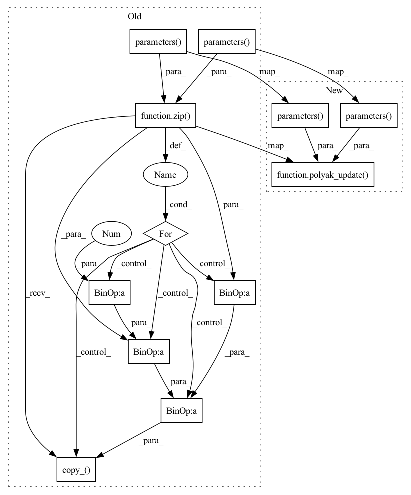

Pattern ID :15680
Before Change
for param, target_param in zip(self.critic.parameters(), self.critic_target.parameters()):
target_param.data.copy_(self.tau * param.data + (1 - self.tau) * target_param.data)
for param, target_param in zip(self.actor.parameters() , self.actor_target.parameters() ):
target_param.data.copy_( self.tau * param.data + (1 - self.tau) * target_param.data)
self._n_updates += gradient_steps
logger.record("train/n_updates", self._n_updates, exclude="tensorboard")
After Change
self.actor.optimizer.step()
polyak_update(self.critic.parameters(), self.critic_target.parameters(), self.tau)
polyak_update(self.actor.parameters() , self.actor_target.parameters() , self.tau)
self._n_updates += gradient_steps
logger.record("train/n_updates", self._n_updates, exclude="tensorboard")
In pattern: SUPERPATTERN
Frequency: 3
Non-data size: 12
Instances Fragment ID: 53017976
Project Name: dlr-rm/stable-baselines3
Commit Name: dbe8cfceb6376c6915c657f91f7d25b23b6a8176
Time: 2020-07-17
Author: 52372765+PartiallyTyped@users.noreply.github.com
File Name: stable_baselines3/td3/td3.py
M Class Name: TD3
N Class Name: TD3
M Method Name: train(3)
N Method Name: train(3)
M Parent Class: OffPolicyAlgorithm
N Parent Class: OffPolicyAlgorithm
M File Name: stable_baselines3/td3/td3.py
N File Name: stable_baselines3/td3/td3.py
M Start Line: 170
M End Line: 176
N Start Line: 170
N End Line: 171
Before Change
This method is called in ``collect_rollout()`` after each step in the environment.
if self.num_timesteps % self.target_update_interval == 0:
for param, target_param in zip(self.q_net.parameters() , self.q_net_target.parameters() ):
target_param.data.copy_( self.tau * param.data + (1 - self.tau) * target_param.data)
self.exploration_rate = self.exploration_schedule(self._current_progress_remaining)
logger.record("rollout/exploration rate", self.exploration_rate)
After Change
This method is called in ``collect_rollout()`` after each step in the environment.
if self.num_timesteps % self.target_update_interval == 0:
polyak_update(self.q_net.parameters() , self.q_net_target.parameters() , self.tau)
self.exploration_rate = self.exploration_schedule(self._current_progress_remaining)
logger.record("rollout/exploration rate", self.exploration_rate)
Fragment ID: 53017978
Project Name: dlr-rm/stable-baselines3
Commit Name: dbe8cfceb6376c6915c657f91f7d25b23b6a8176
Time: 2020-07-17
Author: 52372765+PartiallyTyped@users.noreply.github.com
File Name: stable_baselines3/dqn/dqn.py
M Class Name: DQN
N Class Name: DQN
M Method Name: _on_step(1)
N Method Name: _on_step(1)
M Parent Class: OffPolicyAlgorithm
N Parent Class: OffPolicyAlgorithm
M File Name: stable_baselines3/dqn/dqn.py
N File Name: stable_baselines3/dqn/dqn.py
M Start Line: 141
M End Line: 144
N Start Line: 141
N End Line: 141
Before Change
// Update target networks
if gradient_step % self.target_update_interval == 0:
for param, target_param in zip(self.critic.parameters() , self.critic_target.parameters() ):
target_param.data.copy_( self.tau * param.data + (1 - self.tau) * target_param.data)
self._n_updates += gradient_steps
logger.record("train/n_updates", self._n_updates, exclude="tensorboard")After Change
// Update target networks
if gradient_step % self.target_update_interval == 0:
polyak_update(self.critic.parameters() , self.critic_target.parameters() , self.tau)
self._n_updates += gradient_steps
logger.record("train/n_updates", self._n_updates, exclude="tensorboard") Fragment ID: 53017982
Project Name: dlr-rm/stable-baselines3
Commit Name: dbe8cfceb6376c6915c657f91f7d25b23b6a8176
Time: 2020-07-17
Author: 52372765+PartiallyTyped@users.noreply.github.com
File Name: stable_baselines3/sac/sac.py
M Class Name: SAC
N Class Name: SAC
M Method Name: train(3)
N Method Name: train(3)
M Parent Class: OffPolicyAlgorithm
N Parent Class: OffPolicyAlgorithm
M File Name: stable_baselines3/sac/sac.py
N File Name: stable_baselines3/sac/sac.py
M Start Line: 259
M End Line: 262
N Start Line: 260
N End Line: 260